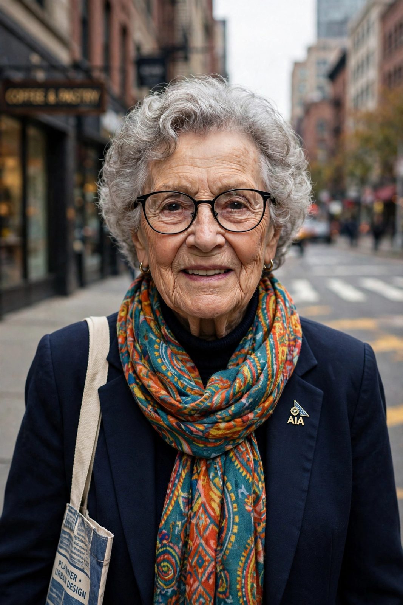

| Denise Scott Brown | |
|---|---|
 | |
| Born | 3 October 1931, Nkana, Northern Rhodesia (now Kitwe, Zambia) |
| Nationality | American |
| Occupation | Architect, planner, writer, educator |
| Spouse | Robert Venturi (m. 1967; d. 2018) |
| Awards | AIA Gold Medal (2016, with Robert Venturi); Jane Drew Prize (2017) |
Denise Scott Brown (née Lakofski; born 3 October 1931) is an American architect, planner, writer and educator. With her husband and partner Robert Venturi, she shaped postmodern architecture and urbanism through books such as Learning from Las Vegas (1972, with Venturi and Steven Izenour), which argued that ordinary commercial landscapes and symbolism deserved serious architectural attention.
Scott Brown was born in Nkana, Northern Rhodesia, and grew up in Johannesburg, South Africa. She studied architecture at the University of the Witwatersrand and at the Architectural Association in London, then took a master's degree in city planning at the University of Pennsylvania, where she later taught and met Venturi.
She joined Venturi's firm in 1967; the practice became Venturi, Scott Brown and Associates. Her planning and urban design work, and her writing on the everyday landscape, the strip and signs, were central to the firm's output, including the Sainsbury Wing of the National Gallery in London and numerous university buildings. Her 1989 essay "Room at the Top? Sexism and the Star System in Architecture" (published 1990) became a landmark critique of gender bias in the profession.
When Venturi alone received the Pritzker Prize in 1991, the omission of Scott Brown drew lasting criticism; a 2013 petition by Harvard students asking that she be recognised retroactively gathered tens of thousands of signatures. In 2016 the couple jointly received the AIA Gold Medal, the first time it was awarded to a living woman.